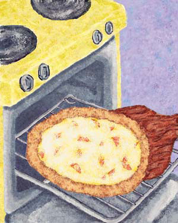
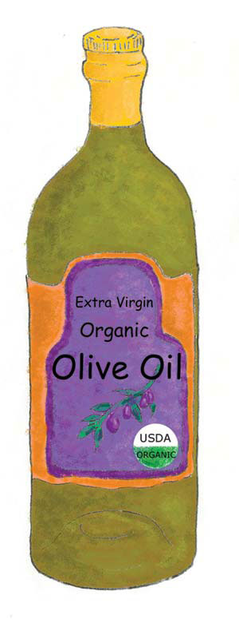
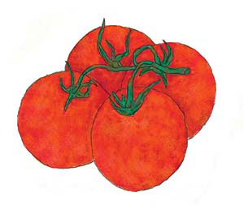
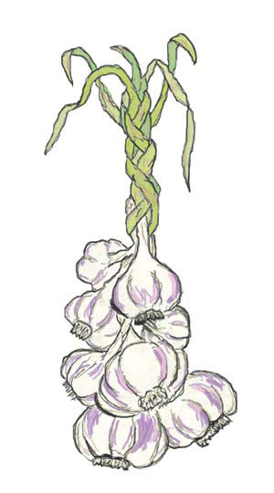
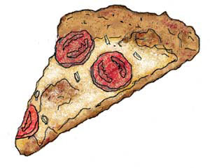
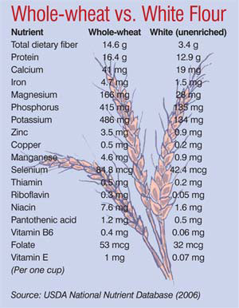

The Ecology Of Pizza
(Or Why Organic Food is a Bargain)
By Sandra Steingraber
June/July 2006
I associate pizza with happiness. It fueled all my childhood birthday parties. It was there the first time a boy put his arm around me. Pizza was one of the few dishes my father cooked. In college, it was a recurring motif. And during my first pregnancy, the mere thought of food was revolting - except for pizza, which I could eat hot or cold, night or day. (I felt less freakish when I learned that tomatoes are the favorite food of nauseated pregnant women.) And both my children - like 70 percent of U.S. schoolchildren - identify pizza as their favorite entrée.
My husband, Jeff, and I buy organic groceries for our family. By directing our food dollars toward organic farmers, we help build healthy soils, sustain rural communities, defend the ozone layer, prevent cancer, protect drinking water and keep our children healthy. I occasionally make pizza for the kids, but when I’m tired or working late, I entertain a fantasy that I dreamed up during my first pregnancy: the fantasy of the organic pizzeria.
Organic food production is the fastest-growing sector of U.S. agriculture, with an average annual growth rate of 20 percent for the last decade. Sales of organic food reached $15 billion in 2005.
Meanwhile, studies have helped dispel common misconceptions about organic farming, such as the belief that organic farms are unproductive. According to the most comprehensive study to compare conventional and organic systems, organic farms produce yields comparable to those of conventional farms, and they consume far less energy and natural resources to do so. They also leave soils healthier for future generations.
Another myth is that organic farms are overrun by insects, but the data show otherwise. A survey of California tomato farms, for example, found that levels of pest damage in conventional and organic tomatoes were virtually identical. What organic farms had in greater abundance were predatory insects that ate the plant-eating bugs.
A third belief - that organic food is more expensive - is pretty much the truth. In some cases, organic prices are higher because of retail markups. Organic farms are usually smaller or more seasonal, so supermarkets have to purchase organic goods from more suppliers. But conventional growers can keep prices low by sheer volume. As the popularity of organic farming increases, supplies should become more reliable and retail prices more competitive.
But the principal reason that organic food costs more than conventional food is that it costs more to produce. Organic farming relies more on labor and less on chemicals, and in the United States, the former costs more than the latter.
Except that chemicals are not as cheap as they appear. The price of organic food reflects the full costs of producing it. The price of chemically grown food does not. Among the costs not factored into the price tag: fertilizer-contaminated groundwater, insecticide-contaminated fish, herbicide-contaminated rain, dead honeybees, poisoned wildlife, deformed frogs, eroded soil, toxic algal blooms, ozone depletion and antibiotic resistance. These are what economists call “externalities”- the costs of an activity that are borne by others.
The almost universal presence of farm chemicals in U.S. waterways and the 130 different pesticides found in groundwater are classic examples. But farmers don’t pay for the economic consequences of erosion, leaching and drift. Instead, the cost of filtering silt and poison out of tap water is passed along to water utilities, and ultimately to everyone who pays a water bill.
The externalities of conventionally grown food add up. According to Cornell University professor David Pimentel, U.S. farmers spend about $10 billion on pesticides each year to protect about $40 billion of food crops, and the external costs of pesticide use add up to another $10 billion. Included in Pimentel’s exhaustive inventory are costs for lost work caused by poisonings of farm workers, treatments for pesticide-induced cancers and the maintenance of complex regulatory systems to monitor pesticide residues in everything from applesauce to lake sediments.
Pimentel points out that his calculations did not include many public health costs, so the actual figure is even higher. A recent study of Canadian farm families, for example, found that exposure to certain weed killers raises the risk of miscarriage. A study from Missouri found a link between pesticides and poor sperm quality. Another found that women exposed in the womb to the now-banned pesticide DDT have more difficulty becoming pregnant than those who weren’t exposed. Other studies reported on DDT’s continuing presence in amniotic fluid and its association with premature birth. In California, Iowa and Minnesota, studies have shown that living near pesticide-sprayed fields raises the risk of birth defects. In Washington state, agricultural insecticides turn up in the dust of nearby homes and in the urine of the children who inhabit them. All these consequences are expensive to address - financially and emotionally.
Pizza: A Natural History
This brings us back to pizza, that food beloved by children and pregnant women. I conducted an experiment by making two pizzas with the same recipe (below). The first was assembled from conventionally grown foods purchased at a local supermarket, the second from organically grown alternatives purchased at a cooperative grocery store. Then I calculated the cost of the ingredients, per pizza. Now let’s look at some of the externalities of producing each ingredient.
Wheat flour (Triticum vulgare)
Wheat flour is the most-consumed food in the United States. (Unfortunately, most people consume refined white flour, rather than whole-grain flour. Whole-grain flour is much more nutritious, as the chart in the Image Gallery shows. - Mother) Pesticides have allowed wheat fields to grow to gargantuan sizes. Vast fields growing only a single variety of one kind of crop allow pest populations to expand to equally vast proportions - at which point only chemical poisons can keep them in check. U.S. growers spray more than 10 million pounds of pesticides on wheat fields each year.
One herbicide commonly used in wheat fields is 2,4-D, which has been linked to non-Hodgkin’s lymphoma, a potentially fatal cancer. Farmers who use 2,4-D have higher rates of lymphoma than the general population, and their risk increases with the number of acres sprayed. The death rate from non-Hodgkin’s lymphoma in the United States is highest in the wheat-growing region of the Great Plains. A comparison of counties in Minnesota, Montana, North Dakota and South Dakota showed significantly higher rates of birth defects in those counties that grow more wheat. And within those counties, infants conceived in April, May or June (the time of herbicide application) have higher rates of defects than children conceived during other months.
Large farms are leaky farms. The nitrogen from fertilizers washes into waterways and ends up in the oceans, where it creates dead zones too depleted of oxygen to sustain life. This is how our flour-buying choices affect the health of the fish at sea.
Organic farms tend to be smaller and more diverse, a combination that provides farmers an entire armory of potential tricks with which to outwit pests. Lewis Grant, for example, farms 2,500 acres in northern Colorado. He has not used pesticides since 1985, and his wheat yields are consistently within the top 10 percent in the state. He plants wheat only in fields where it has not grown for five to six years. During the off-years, he grows some combination of millet, sunflowers, lettuce, spinach, broccoli, beans and hay. This constantly shifting vegetative landscape keeps disease and pest populations in check. In addition, at the corners of his fields, he plants insectaries - beds of particular plants that serve as habitats for predatory insects. For fertilizer, Grant uses cow manure and cover crops. When the Russian wheat aphid devastated wheat crops throughout the area, yields on his farm were not affected.
Cost of conventional flour: $0.44
Cost of organic flour: $0.77
Olive oil (Olea europaea)
At least a dozen pounds of ripe olives must be squeezed to make a quart of virgin oil. But more is concentrated than just the juice of the fruit. When insecticides are used to control the olive fruit’s nemesis - the olive fly - residues remain on the fruit. Because insecticides are lipid-soluble, they find their way into the oil. When olives are pressed, concentrations of these residues can increase by a factor of three to seven.
Paco Nunez de Prado is a seventh-generation olive grower. He oversees 100,000 olive trees on four different farms in Spain, as well as an olive oil mill and bottling plant. And he does it all organically. To control olive flies, he uses bait infused with sexual attractants. The males are trapped; the females, he supposes, “die of loneliness.” And because the pruned leaves and branches are free of pesticides, he can mix them with the residue left after pressing to make his own fertilizer.
Cost of conventional olive oil: $1.44
Cost of organic olive oil: $2.35
Tomato (Lycopersicon lycopersicum)
Tomatoes are vulnerable to at least 14 fungal diseases (with names that end with words like blight, rot, wilt or canker) and an equally impressive number of insect pests. Many commercial tomato farms in Florida sterilize the soil with a fumigant called methyl bromide. This chemical kills everything its vapors touch - insects, weeds, fungus, earthworms, rodents, disease pathogens.
Methyl bromide is highly toxic to those who apply it. Colorless, odorless and instantly absorbed in the lungs, the fumigant is responsible for more than 1,000 documented pesticide poisonings in the United States since 1932. It is a neurotoxin that causes seizures, vomiting, tremors, slurred speech and pulmonary edema. A recent study of more than 55,000 U.S. farmers found that methyl bromide is associated with cases of prostate cancer - those with the most exposure had triple the risk.
Methyl bromide also destroys more ozone than chlorofluorocarbons. Its use was scheduled to be phased out in the United States by 2005. However, the United States requested permission from the United Nations to use more methyl bromide in 2005 than in 2003 - that’s more of a phase-in than a phase-out. Florida uses almost half the methyl bromide applied to U.S. fields.
So, our tomato-buying habits can subsidize an industry desperately lobbying for the right to use a chemical that destroys the part of the atmosphere that protects us from sunburn and skin cancer. As a mother who struggles mightily to limit my childrens’ exposure to sun, I would like the pizza sauce I feed them to be in line with my efforts to keep their hats on at the beach.
Charles Wilber, an organic tomato grower in Alabama, appears in the Guinness Book of World Records for the biggest tomato yield on a single tomato plant - 342 pounds! His secrets are mulch and birds. Wilber places birdhouses around his fields and provides birdseed in the winter. The birds, in turn, eat the hornworms on his tomatoes. He uses cardboard collars to keep cutworms off the stalks and plants Austrian peas around his fields to distract aphids. “My methods compete with synthetic fertilizers,” Wilber says.
Cost of conventional tomato paste: $0.50
Cost of organic tomato paste: $0.99
Cost of conventional fresh tomatoes: $1.20
Cost of organic fresh tomatoes: $0.69
Garlic (Allium sativum)
Garlic reproduces by cloning itself; one clove buds off about 12 to 15 more. This is not a lot of bang for the buck, considering that farmers who save their own planting stock must keep 10 percent to 12 percent of their harvest. The miserly asexuality of garlic is one reason for its high price.
Insisting on lots of nutrients and water, garlic is a “heavy feeder.” Such crops pose real problems for conventional growers because the nitrogen the plants require is easily swept away in irrigation water. Garlic also dislikes growing alongside weeds and is susceptible to many fungal diseases. Conventional farmers address these problems with a battery of chemicals, many of which are highly toxic to fish, clams, oysters, aquatic plants and birds. Two are potential human carcinogens, and two cause birth defects in rabbits. One breaks down into a chemical that disrupts thyroid functioning. Another alters brain and spinal cord development in fetal animals.
These are the chemicals we spray into our environment in order to grow a food that people buy for its health benefits. Garlic lowers blood pressure and cholesterol, stimulates the immune system, slows tumor growth, and lowers the risk for colon cancer and possibly breast cancer.
Phil Foster, a garlic grower near Hollister, Calif., shifted to organic methods in 1989 after seeing the results on a neighboring farm. Like Lewis Grant, he relies on crop rotation and insectaries to control pests. Foster likes to see some pests around because they maintain the population of his beneficial bugs. “We’re not trying to have a sterile system here,” he says.
On Foster’s farm, the nutrients so greedily desired by garlic are provided by compost and cover crops. Applying synthetic fertilizer would be a cheaper way to deliver nitrogen to his crops, but garlic grown on healthy, microbe-rich soil is prone to fewer diseases and requires less water. As for weed control, Foster pulls a flame weeder behind his tractor to burn away any competing vegetation.
Cost of conventional garlic: $0.12
Cost of organic garlic: $0.07
Cheese (From the milk of Bos taurus)
One big difference between conventional and organic dairies is the extent to which the cows’ reproductive cycles are manipulated. Left to her own devices, a cow would get pregnant in the fall, give birth in the spring, then produce the most milk when fresh green grass provides maximum nutrition for both her and her calf. So a dairy would produce an abundance of milk in midsummer and almost none in late winter.
Hormones that increase milk production are permissible in conventional dairies, but prohibited in organic operations. The most controversial hormone in the dairy industry is genetically engineered recombinant bovine growth hormone (rBGH). When rBGH is injected under the skin, cows produce more milk. The U.S. Food and Drug Administration approved the use of rBGH for dairy cattle in 1993, but its use is illegal in Canada and the European Union.
Many consumers wonder if rBGH ends up in their milk and cheese. The short answer is yes, but of more concern are the indirect effects of rBGH. Cows injected with rBGH need higher-protein feed and more intensive veterinary care, and they are more likely to secrete pus from inflamed udders, which requires treatment with antibiotics. They also produce higher levels of a naturally occurring protein called insulin-dependent growth factor-1 (IGF-1). This, too, finds its way into the milk. Evidence suggests that IGF-1 plays a role in cancer: Women with increased levels have a higher risk of breast cancer, and IGF-1 makes breast cancer cells in petri dishes grow faster.
Because it is a protein, any IGF-1 in milk should be broken apart by our digestive tracts. This is a reassuring supposition, but suppositions can be incorrect. For years, researchers argued that estrogen hormone therapy for menopausal women lowered the risk of stroke and dementia. We now know the opposite is true. Researchers at Cornell University’s Program on Breast Cancer and Environmental Risk Factors say it is “too early to study the breast cancer risk of women who drink milk and eat milk products from hormone-treated animals.” They are right, but if the introduction of rBGH into the milk supply is an ongoing human experiment, I’d prefer to keep my daughter in the control group.
As a conventional dairyman, Fay Benson accumulated so much debt that he “couldn’t even afford to go out of business.” The last straw was rBGH. “I don’t like pushing my cows. I like working with Mother Nature instead of pushing against her.” Benson’s operation in Groton, N.Y., became a certified organic dairy in 1997. Initially, Benson’s biggest worry was what he would do when his cows became sick, as antibiotics are not permitted on organic dairies. But rates of illness in his herd declined once he switched to organic practices. Cows in conventional dairies typically produce milk for only about three years, but cows on organic dairies are typically milked for 10 to 12 years.
Cost of conventional mozzarella: $0.80
Cost of organic mozzarella: $1.98
Final Thoughts
“If the public could only see the real price tag of the food we buy, purchasing decisions would be easy. Compared to industrial food, organic alternatives are the bargains of a lifetime.”
So says Andrew Kimbrell, executive director of the Center for Food Safety. I agree wholeheartedly. Jeff and I buy organic groceries because it makes a big difference without a big time commitment - we have to go shopping and cook dinner anyway. At the same time, we’re also protecting our children’s health. And we know we are not passing along externalized costs of growing the food we eat to the next generation, of which our children are part.
It’s not always easy to fit organic food into a household budget. (While two of the ingredients for my organic pizza - fresh tomatoes and garlic - actually cost less than their conventional counterparts, the total cost was higher: $6.85 versus $4.50.) The important thing is to do it as often as possible, and as the organic sector grows, the effort should get easier. Can organic pizzerias be far behind?
Cheese and Tomato Pizza
1 cup warm water
1 tbsp sugar
1 tbsp yeast
1 tsp salt
1/2 cup extra virgin olive oil
1 1/2 cups whole-wheat flour
1 1/2 cups all-purpose wheat flour
1 small can tomato paste
2 fresh tomatoes, chopped
3 cloves garlic, diced
1 cup mozzarella cheese, grated
Total cost per pizza: $4.50 conventional; $6.85 organic
Costs are from upstate New York, summer 2003.
Mix water, sugar, yeast, salt, oil and a spoonful of the all-purpose wheat flour in a large bowl and let sit for 10 minutes. When bubbles appear, begin adding the rest of the flour. When the dough becomes stiff, turn it out onto a floured surface. Knead until shiny, smooth and no longer sticky. Place it back in the bowl. Cover and let rise until it doubles in bulk - about 1 hour. Meanwhile, grease a cookie sheet and preheat oven to 475 degrees.
Punch dough down. (If children are around, let them do this part.) Roll it out and stretch it to fit the cookie sheet. (Freeze any extra dough in a plastic bag.) Smear with tomato paste. Layer on tomatoes. Sprinkle with garlic and cheese. Bake for 10 to 15 minutes or until cheese bubbles and begins to brown.
- Reprinted courtesy of the Organic Trade Association. Author, mother and cancer survivor Sandra Steingraber holds a doctorate in biology. Her books include Living Downstream: An Ecologist Looks at Cancer and the Environment and Having Faith: An Ecologist's Journey to Motherhood. She’s currently a distinguished visiting scholar at Ithaca College in Ithaca, N.Y.
|
 BERNARD LAWS A pizza made at home from real ingredients in far more tasty and nutritious than anything you can have delivered. |
 BERNARD LAWS While most Americans eat refined wheat flour, whole wheat is the healthier, more flavorful option. |
 BERNARD LAWS The cost of conventional olive oil: $1.44, organic olive oil is : $2.35 |
|
 BERNARD LAWS Anyone who's had a fresh-from-the-vine tomato knows they're as different from conventional tomatoes as oranges. |
 BERNARD LAWS Don't let those pretty garlic braids fool you. While lovely, real garlic also packs a terrific flavor punch. |
 BERNARD LAWS When a real pizza made from whole foods, you'll quickly realize you've discovered a new food entirely. |
|
 USDA National Nutrient Database The nutritional value of whole wheat versus white flour is plenty of reason to make the switch. |
|
|